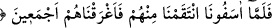
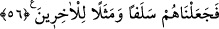
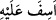

Burada ayrıca şuna da işâret edilmektedir ki, düşman hiçbir şekilde boyun eğmez.
Kerhen, istemeyerek boyun eğmesine ise aldanmamalıdır. Zîrâ düşman, fırsat
bulduğunda öpeceği eli keser.
Şâir şöyle der:
Yılanın ahlâkını öğrendiğimden beri
Asla ondan emin olarak oturmadım.
55. Böylece bizi öfkelendirince onlardan intikam aldık, hepsini suda boğduk.
İnad ve isyanda haddi aşarak “böylece bizi öfkelendirince onlardan intikam aldık,”
itâat eden ve edilenlerin “hepsini suda” denizde “boğduk,” azâbımızı peşin olarak
verdik. Artık hoşgörü ve müsamaha göstermedik. Hiç birini geride sağ bırakmadık.
Keşfü’l-esrâr’da “onlara belâ ve azâbı helal ve meşrû saydık” denilmiştir.
“Îsâf”; kederli olmak, asabî olmak, kızmak gibi mânâlara gelir. Kişinin öfkesi çok
şiddetli olunca bu kelime kullanılır.
Kamus’ta şöyle denilmektedir: “Esef” şiddetli hüzündür. “/esife aleyhi”
ifâdesi “ona öfkelendi” anlamında kullanılır. Peygamberimiz (s.a.)’e âni ölüm soruldu.
Peygamberimiz, “bu durum mümine rahat, kâfire ise gazaptır”[173] buyurdu. Hadisteki
“esif” kelimesi “ketif” sigasında da rivâyet edilmiştir. Buna göre; âni ölüm, Allah’ın
kula öfkelenmesinin ardından öfkeyle onu yakalamasıdır. Ancak kul ölüme hazır olursa
ne âlâ…
Râgıb şöyle demiştir: “Esef” hüzün ve öfkenin bir arada olmasıdır. Bazen bunlardan
yalnız birine de denilir. Bunun hakîkati, intikamla öç almak maksadıyla kalpteki kanın
atak yapmasıdır. Bu durum, kişinin kendinden aşağı olanlara vâkî olunca kan beyne
sıçrar ve dağılır. Gazap ve öfke olur. Ancak kişinin kendinden üstün olanlara yönelik
meydana gelince bu sefer kan beyinde toplanır ve bundan hüzün meydana gelir. Firavun
ve kavmi isyan ve inadda iyice ileri gidince bizi de iyice kızdırdılar. Allah’ın gazap
etmesi, rıza ve hoşnutluğunun zıddının olması demektir. Yahut intikam murad etmesidir.
Yahut tehdidin gerçekleşmesidir. Veya elim ve şiddetli bir yakalamadır. Yahut aradan
perde ve engelleri yırtıp kaldırma ve ateşle azâb etme demektir. Yahut nimeti
değiştirmektir.
56. Onları, sonradan gelenlerin geçmişi ve bir ibret örneği kıldık.